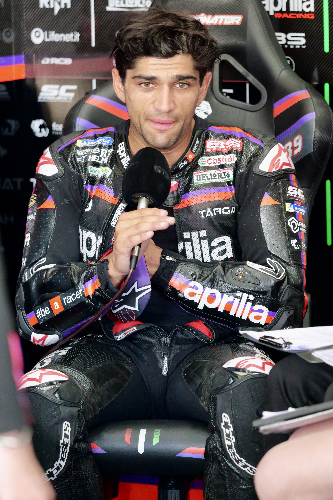

O Grande Prêmio de San Marino e da Riviera de Rimini coloca a MotoGP novamente em um de seus cenários mais tradicionais. A edição de 2026 será disputada de sexta-feira a domingo, no Misano World Circuit Marco Simoncelli, localizado em Misano Adriatico, na Itália. Embora a prova carregue San Marino no nome, o circuito fica em território italiano, próximo à costa do Adriático.
A etapa ocupa um espaço especialmente importante na temporada. Misano chega com uma disputa pelo título completamente aberta: Jorge Martín lidera com 256 pontos, Marc Márquez aparece em segundo com 237 e Marco Bezzecchi é o terceiro colocado com 232.
O GP também integra uma sequência decisiva do calendário de 2026. Depois de Misano, o Mundial segue para a Áustria e, posteriormente, inicia uma longa sequência de etapas fora da Europa.
Disputa pelo título
A situação do campeonato transforma Misano em muito mais do que uma corrida tradicional. Jorge Martín chega defendendo 19 pontos de vantagem sobre Marc Márquez. Bezzecchi, por sua vez, está apenas cinco pontos atrás do espanhol da Ducati e 24 distante da liderança.
A diferença pequena ganha ainda mais peso pelo que está em jogo na carreira de cada um. Martín tenta conquistar seu segundo título da MotoGP, depois de ter sido campeão em 2024.
Do outro lado está Marc Márquez, o veterano de 33 anos e um dos pilotos mais vitoriosos da história do campeonato. Atual campeão, o espanhol busca a oitava taça da MotoGP e a décima de sua carreira em Mundiais.
Bezzecchi vive uma situação diferente. Aos 27 anos, o italiano da Aprilia tenta conquistar seu primeiro título mundial. A coincidência histórica aumenta o interesse pela disputa: em 2018, Bezzecchi já esteve envolvido na briga pelo Mundial da Moto3 justamente contra Martín, que terminou aquela temporada como campeão. Agora, oito anos depois, os dois voltam a aparecer entre os protagonistas de uma disputa pelo título, desta vez no topo da categoria.
Márquez foi quem mais ganhou terreno na última rodada. Os pilotos chegam a San Marino depois do GP de Aragão, no MotorLand, onde Márquez venceu a corrida principal, Pedro Acosta terminou em segundo e Marco Bezzecchi completou o pódio em terceiro. Jorge Martín, líder do campeonato, terminou em quinto lugar.
O retrospecto do número 93 no circuito aumenta o peso desse cenário. Marc Márquez soma seis vitórias na categoria principal em Misano e lidera a estatística de triunfos da MotoGP na pista. Valentino Rossi Rossi e Jorge Lorenzo aparecem atrás, com três vitórias cada.
Além disso, Márquez ganhou as duas últimas corridas de MotoGP realizadas no circuito antes da edição de 2026. Em 2025, venceu depois de travar uma forte disputa com Marco Bezzecchi, que havia conquistado a Sprint no sábado.
Jorge Martín também sabe o que é dominar um fim de semana em Misano. Em 2023, o espanhol venceu tanto a Sprint quanto o Grande Prêmio, experiência que ganha relevância no momento em que ele tenta defender a liderança da temporada 2026.
Um circuito curto, técnico e tradicional
O Mundial de Motovelocidade corre em Misano desde 1980. A primeira prova válida pelo campeonato no circuito foi disputada naquele ano, ainda com o antigo traçado de 3,448 km e no sentido anti-horário. A corrida da categoria 500cc, principal classe da época, foi vencida pelo norte-americano Kenny Roberts.
Misano recebeu dez eventos de Grand Prix entre 1980 e 1993. Depois, ficou 13 anos fora do calendário e só retornou em 2007, já com o circuito profundamente remodelado, ampliado e passando a ser percorrido no sentido horário. Desde então, tornou-se presença regular no calendário da MotoGP.
O GP de San Marino não nasceu em Misano. A primeira edição com esse nome foi disputada em Imola, em 1981, e a prova também passou por Mugello. Misano recebeu o GP em 1985, 1986 e 1987 e, desde o retorno de 2007, tornou-se a sede permanente da etapa, atualmente chamada oficialmente de Grande Prêmio de San Marino e da Riviera de Rimini.
O Misano World Circuit Marco Simoncelli tem 4,23 quilômetros de extensão, 16 curvas — dez para a direita e seis para a esquerda — e uma reta principal de 530 metros. A corrida principal da MotoGP é disputada em 27 voltas, totalizando aproximadamente 114,1 quilômetros.
A configuração ajuda a explicar por que diferenças pequenas costumam ser decisivas no circuito. Misano combina mudanças rápidas de direção, zonas de forte frenagem e trechos nos quais a aceleração na saída das curvas influencia diretamente a preparação para a sequência seguinte.
O recorde absoluto de volta da pista pertence a Francesco Bagnaia. Em 2024, o italiano registrou 1min30s031, marca que também aparece como a melhor volta de pole position da MotoGP no circuito. Bagnaia, Jorge Lorenzo e Maverick Viñales dividem o recorde de poles em Misano, com quatro cada.
O nome Marco Simoncelli foi incorporado ao circuito em homenagem ao piloto italiano, reforçando ainda mais a ligação da pista com a história do motociclismo do país.
Apesar de ser um circuito relativamente curto e bastante técnico, Misano também leva às motos para além dos 300 km/h. O recorde oficial de velocidade máxima da categoria na pista é de 305,9 km/h, marca alcançada por Marco Bezzecchi em 2023.
A velocidade ajuda a dimensionar o nível de exigência do traçado. Com apenas 530 metros em sua reta mais longa, Misano não está entre os circuitos mais velozes do calendário, mas combina acelerações fortes com sequências técnicas e zonas de frenagem que exigem precisão dos pilotos.
Para comparação, o recorde absoluto atual da MotoGP é de 368,6 km/h, alcançado por Jorge Martín em Mugello em 2026. Ou seja, Misano privilegia menos a velocidade final e mais o equilíbrio entre aceleração, frenagem e capacidade de mudar rapidamente de direção.
O Brasil em Misano
A edição de 2026 também tem interesse especial para o público brasileiro. Diogo Moreira disputa sua temporada de estreia na MotoGP com a Pro Honda LCR, pilotando a Honda RC213V de número 11. O piloto chegou à classe principal depois de conquistar o título da Moto2 em 2025.
Moreira devolveu ao Brasil um representante regular no grid da categoria principal após um longo período sem um piloto brasileiro na MotoGP. Seu melhor resultado na temporada até aqui foi o sexto lugar no GP da Hungria.
Para o brasileiro, Misano representa mais uma oportunidade de acumular experiência em uma pista tradicional e tecnicamente exigente, em uma temporada de adaptação à potência, à aerodinâmica e ao nível de competitividade da MotoGP.
Mudança confirmada no grid
Uma alteração já está definida para o fim de semana. Maverick Viñales não disputará o GP enquanto continua seu processo de recuperação, após uma lesão no ombro esquerdo sofrida em uma queda no GP da Alemanha de 2025, em Sachsenring. O acidente exigiu um longo processo de recuperação e acabou causando problemas que atravessaram também a temporada de 2026. Pol Espargaró ocupará a vaga na Red Bull KTM Tech3, em sua terceira participação na temporada 2026 como substituto de Viñales. Ele já havia assumido a moto em Silverstone e Aragão.
Programação do GP
Abaixo, os principais horários da corrida já convertidos para o horário de Brasília.
Sexta-feira, 11 de setembro
- Treino Livre 1 da MotoGP — 5h45
- Treino da MotoGP, que define os dez classificados diretamente para o Q2 — 10h
Sábado, 12 de setembro
- Treino Livre 2 da MotoGP — 5h10
- Início da classificação — 5h50
- Sprint da MotoGP — 10h
A Sprint terá 13 voltas.
Domingo, 13 de setembro
- Warm-up da MotoGP — 4h40
- GP de San Marino — 9h
A corrida principal terá 27 voltas.
Onde assistir ao GP de San Marino
A MotoGP aponta a ESPN como detentora oficial dos direitos de transmissão da categoria no Brasil em 2026. A MotoGP também faz parte da programação esportiva disponibilizada pelo Disney+ Premium no país. O VideoPass oficial da categoria oferece ainda a cobertura própria do campeonato.
Como funciona a pontuação e o que pode mudar em Misano
A disputa pelo título pode mudar de forma importante já no GP de San Marino porque cada fim de semana da MotoGP distribui pontos tanto na Sprint de sábado quanto na corrida principal de domingo. No total, um piloto pode somar até 37 pontos em uma única etapa.
Pontuação da corrida principal:
- 1º lugar — 25 pontos
- 2º lugar — 20 pontos
- 3º lugar — 16 pontos
- 4º lugar — 13 pontos
- 5º lugar — 11 pontos
- 6º lugar — 10 pontos
- 7º lugar — 9 pontos
- 8º lugar — 8 pontos
- 9º lugar — 7 pontos
- 10º lugar — 6 pontos
- 11º lugar — 5 pontos
- 12º lugar — 4 pontos
- 13º lugar — 3 pontos
- 14º lugar — 2 pontos
- 15º lugar — 1 ponto
Pontuação da Sprint:
- 1º lugar — 12 pontos
- 2º lugar — 9 pontos
- 3º lugar — 7 pontos
- 4º lugar — 6 pontos
- 5º lugar — 5 pontos
- 6º lugar — 4 pontos
- 7º lugar — 3 pontos
- 8º lugar — 2 pontos
- 9º lugar — 1 ponto
Esse sistema deixa aberta a possibilidade de mudança na liderança já em Misano. A situação antes do fim de semana é:
- Jorge Martín — 256 pontos
- Marc Márquez — 237 pontos, 19 atrás do líder
- Marco Bezzecchi — 232 pontos, 24 atrás do líder
Como um piloto pode conquistar até 37 pontos somando Sprint e corrida principal, tanto Márquez quanto Bezzecchi têm possibilidade matemática de sair de San Marino na liderança do campeonato, dependendo da combinação de resultados.
A disputa pelo título entra na reta decisiva
Apesar da importância de Misano, o campeonato ainda terá um caminho considerável pela frente. O GP de San Marino é a 14ª das 22 etapas da temporada 2026.
A sequência passa pela Áustria, em 20 de setembro; Japão, em 4 de outubro; Indonésia, em 11 de outubro; Austrália, em 25 de outubro; Malásia, em 1º de novembro; Catar, em 8 de novembro; Portugal, em 22 de novembro; e Valência, em 29 de novembro, quando está previsto o encerramento do campeonato.
O principal ingrediente desta edição é a combinação entre tradição e pressão esportiva. Martín chega líder, mas sem margem confortável. Márquez está a uma distância que pode ser revertida rapidamente em um único fim de semana, enquanto Bezzecchi permanece suficientemente próximo para transformar a disputa em uma batalha de três pilotos.
Há também um confronto importante entre fabricantes. Martín e Bezzecchi defendem a Aprilia, enquanto Márquez representa a Ducati. A Aprilia chega com dois pilotos dentro dos três primeiros do Mundial, justamente para uma etapa italiana na qual a rival Ducati também costuma receber enorme apoio do público.
Misano, portanto, reúne elementos que ajudam a explicar sua importância recorrente no calendário da MotoGP. É uma pista histórica, tecnicamente exigente, cercada por uma região profundamente ligada ao motociclismo e frequentemente inserida em momentos importantes das disputas pelo campeonato.
Em 2026, essa característica ganha uma dimensão ainda maior. O GP de San Marino chega ao fim de semana como uma das etapas centrais da luta pelo título da temporada.